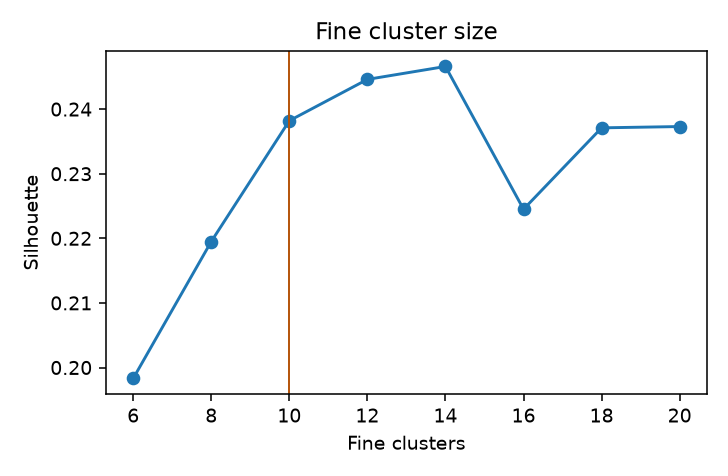
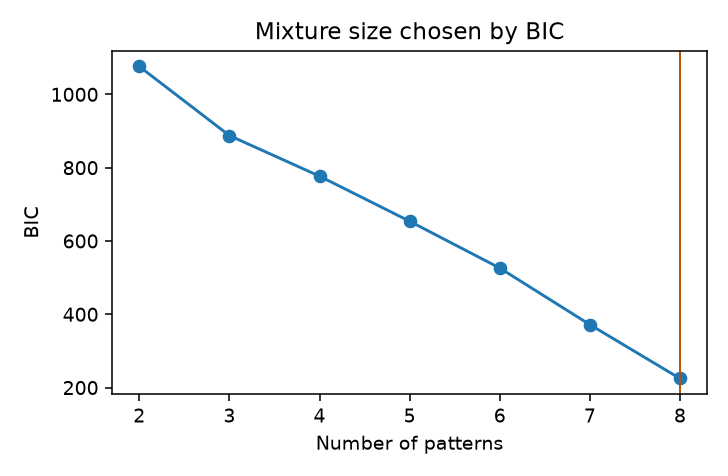
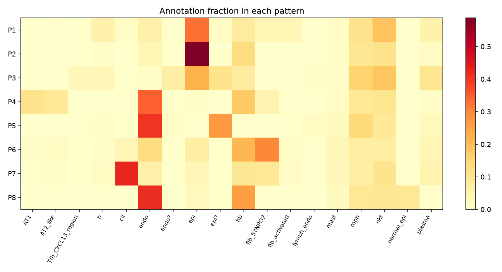
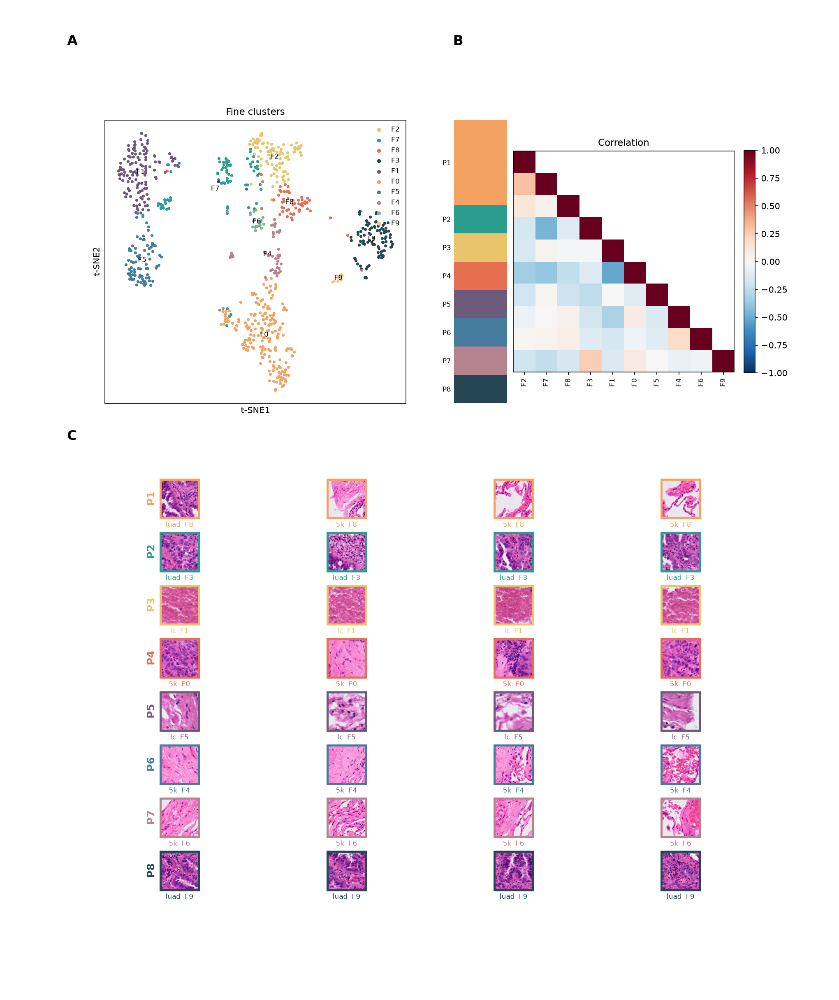
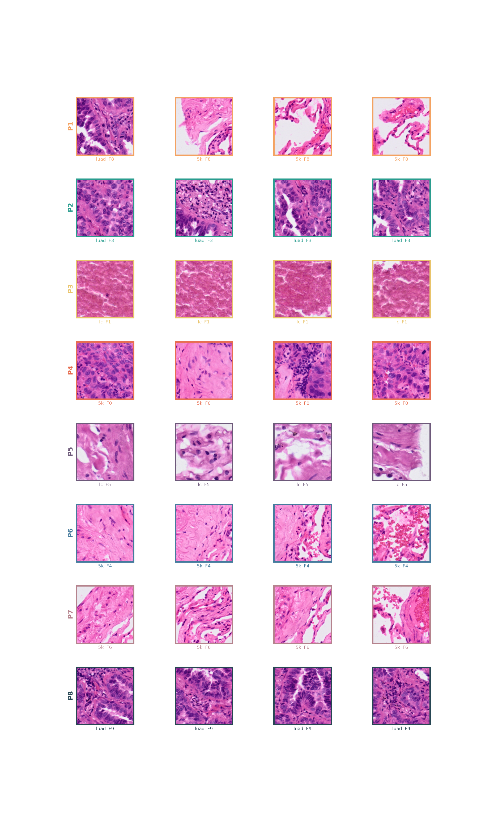
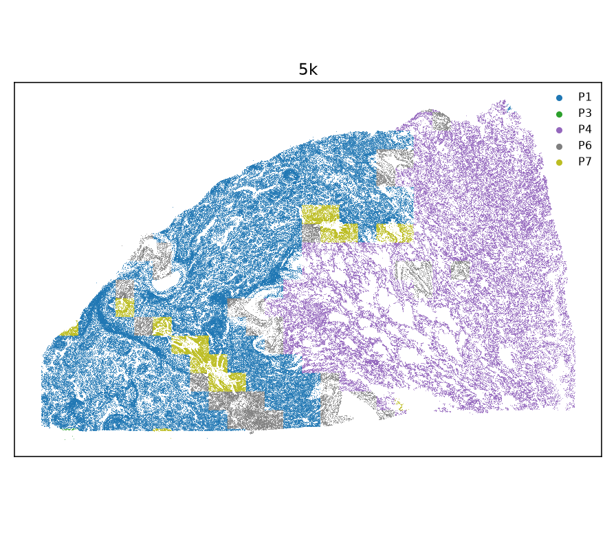
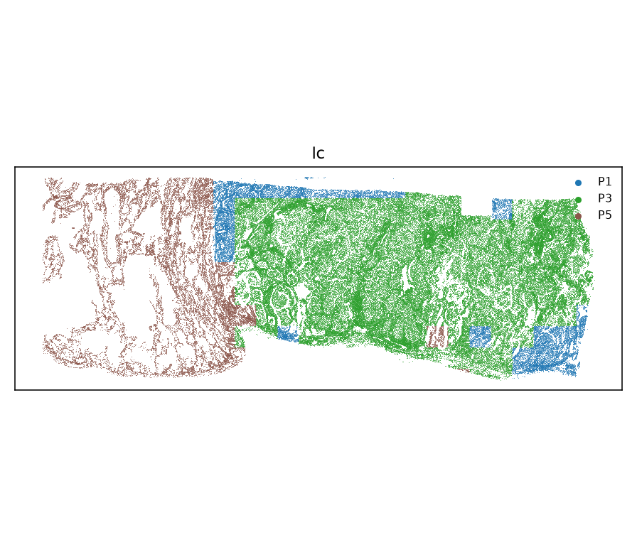
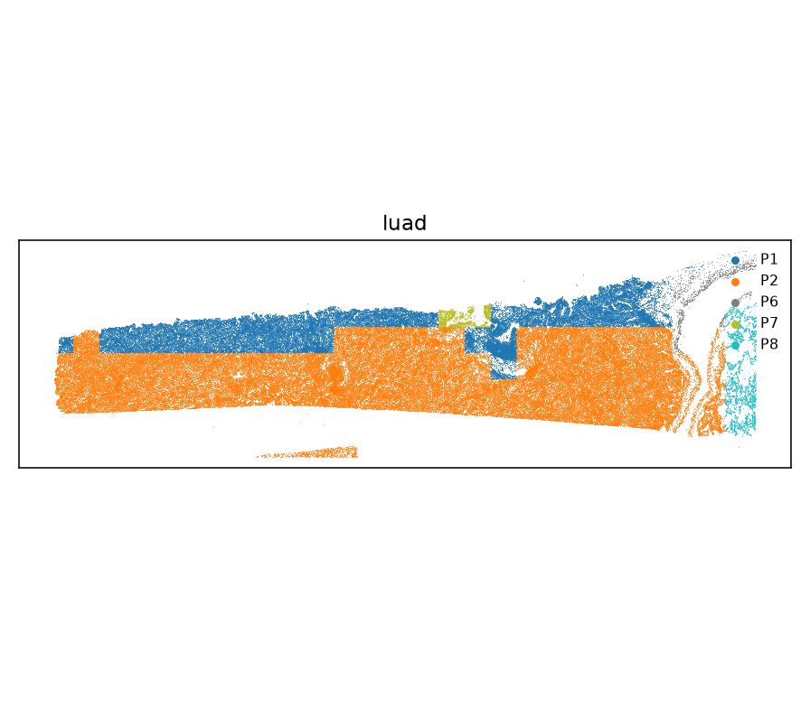

Annotile
把已经标好细胞类型的空间切片划成小窗，把细胞类型、共有基因表达和配准后的 H&E 外观合在一起聚类，得到可以在切片之间比较的组织模式。
输入来自三张公开的人肺 Xenium 切片。细胞类型注释来自 GHIST_input。细胞坐标、H&E 和 cell_feature_matrix.h5 来自对应的 10x Genomics 公开数据。形态学流程参照 Zhang、Liu、Chen 等人在 Genome Medicine 2025 上的 HIPO：先得到一批细簇，再用高斯混合按 BIC 把相似细簇合并成模式，最后看每张切片由哪些模式组成。
HIPO 的细簇特征是 H&E 图块的对比学习向量。这里的小窗同时使用细胞类型比例、三张切片共有基因的表达主成分，以及配准 H&E 的颜色和纹理。细胞注释是比原文多出来的那一维。转录组 Seurat 簇没有放进跨切片的特征里，因为不同实验的簇编号不是同一种细胞状态；它们只在最后用来描述每个模式里混有哪些转录组簇。
数据
- Prime 5K 肺腺癌（5k）
- 免疫组库面板肺癌（lc）
- 多模态分割肺腺癌（luad）
注释表只有细胞编号和类型。坐标按细胞编号拼回去。三张切片的编号匹配率都在下面的表里。随机种子是 42。
1. 留下可用的细胞注释
注释说明里，low_feat_cell、mph_CXCL9_region、fib?，以及 CCL19 混合群（表中的 lymph_endo?CCL19）被标成混合或不采用。带问号、又不在保留名单里的标签也去掉。说明明确写了对照图像后保留的 epi? 和 endo? 留在分析里。fib_SYNPO2 按原表保留，说明里把它进一步看成血管平滑肌。
保留下来的类型：AT1、AT2_like、Tfh_CXCL13_region、b、cil、endo、endo?、epi、epi?、fib、fib_SYNPO2、fib_activated、lymph_endo、mast、mph、nkt、normal_epi、plasma。
| 切片 | 注释细胞 | 坐标匹配 | 过滤后 | 进入小窗 | 小窗以外 | 去掉的标签 |
|---|---|---|---|---|---|---|
| 5k | 278,146 | 100.0% | 253,699 | 253,512 | 187 | low_feat_cell 9048，lymph_endo?CCL19 9035，mph_CXCL9_region 5140，epi?GRP 1224 |
| lc | 160,448 | 100.0% | 147,889 | 147,759 | 130 | low_feat_cell 7892，fib? 4667 |
| luad | 161,894 | 100.0% | 161,894 | 161,742 | 152 | 无 |
2. 把切片切成小窗
每个细胞按质心落入边长 400 µm 的方格。少于 30 个细胞的方格去掉，相当于原文里丢掉组织太少的图块。三张切片一共 785 个小窗。相邻小窗属于同一模式的比例是 83.6%，用来看这些模式在组织里是成片的还是散点。
3. 小窗特征
每个小窗先算细胞类型比例。三张切片再对上表达矩阵里共有的 153 个基因，取每个细胞的 log1p 标准化表达，在窗内平均后做主成分，这次保留 16 个成分。H&E 用配准矩阵裁出同一小窗，加入平均颜色、颜色波动和纹理。这三块各自标准化后拼在一起做聚类。
表达矩阵和注释细胞编号的匹配率：5k 100.0%，lc 100.0%，luad 100.0%。
4. 细簇
对全部小窗做 k-means。k 从 6 试到 20。每次在固定的 4000 个小窗（不足则全部）上计算轮廓系数，只有比当前选择高出 0.01 才换成更大的 k。选中的细簇数是 10。
k=6 → 0.198, k=8 → 0.220, k=10 → 0.238, k=12 → 0.245, k=14 → 0.247, k=16 → 0.225, k=18 → 0.237, k=20 → 0.237

5. 合并成模式
每个细簇取成员小窗的平均组成。对这些平均向量做标准化，再用对角协方差的高斯混合去拟合。组数从 2 试到细簇数减 1，并且不超过 8，取得分最低的 BIC。选中 8 个模式，按包含细胞数从多到少称为 P1、P2……。细簇之间的相关矩阵只用来展示哪些细簇被放在一起，不作为混合模型的输入：相关矩阵的行数和列数相同，满协方差估不稳。
G=2 → 1076, G=3 → 888, G=4 → 777, G=5 → 654, G=6 → 526, G=7 → 372, G=8 → 225
BIC 一直降到搜索上限。上限由细簇个数决定，所以这次合并很少：多数细簇各自留成一个模式。


| 模式 | 包含的细簇 | 小窗 | 细胞 | 主要细胞类型 |
|---|---|---|---|---|
| P1 | F2 F7 F8 | 227 | 198,468 | epi 32.7%、nkt 18.7% |
| P2 | F3 | 95 | 111,092 | epi 58.8% |
| P3 | F1 | 122 | 105,605 | epi 21.9%、nkt 18.4%、mph 15.4% |
| P4 | F0 | 185 | 80,623 | endo 34.5%、fib 17.6% |
| P5 | F5 | 79 | 25,777 | endo 40.3%、epi? 26.8% |
| P6 | F4 | 47 | 21,498 | fib_SYNPO2 30.0%、fib 21.1% |
| P7 | F6 | 19 | 17,226 | cil 42.4% |
| P8 | F9 | 11 | 2,724 | endo 41.5%、fib 25.8% |

每个模式的样子
版式对应原文图 2。A 的每个点是一个小窗，t-SNE 用的是注释、表达和 H&E 拼在一起的特征，颜色是细簇。B 是这些特征的细簇相关矩阵，只保留下三角。C 的每一格是该模式的一张代表性 H&E 小窗，边框颜色和 B 的模式色一致。


6. 每张切片的模式组成
一张切片的向量是各个模式所占的细胞比例。下表是这次运行的结果。三张切片来自三个公开实验、各一个供体，切片之间的相关只能描述这三张片子，不能当成患者分型。
| 切片 | P1 | P2 | P3 | P4 | P5 | P6 | P7 | P8 |
|---|---|---|---|---|---|---|---|---|
| 5k | 54.0% | 0.0% | 0.0% | 31.8% | 0.0% | 8.0% | 6.2% | 0.0% |
| lc | 11.1% | 0.0% | 71.4% | 0.0% | 17.4% | 0.0% | 0.0% | 0.0% |
| luad | 27.8% | 68.7% | 0.0% | 0.0% | 0.0% | 0.8% | 1.0% | 1.7% |

切片之间的 Pearson 相关：
| 切片 | 5k | lc | luad |
|---|---|---|---|
| 5k | 1.00 | -0.19 | 0.08 |
| lc | -0.19 | 1.00 | -0.22 |
| luad | 0.08 | -0.22 | 1.00 |



7. 模式里的转录组簇
Seurat 分辨率 0.3 的簇编号只在各自分片内部有意义。下表是每个模式里细胞数最多的三个转录组簇。
| 切片 | 模式 | 细胞 | 主要转录组簇 |
|---|---|---|---|
| 5k | P1 | 137,030 | 簇 1 22.8%，簇 0 18.3%，簇 4 11.0% |
| 5k | P3 | 54 | 簇 4 57.4%，簇 1 20.4%，簇 6 9.3% |
| 5k | P4 | 80,623 | 簇 2 33.9%，簇 3 17.6%，簇 9 10.9% |
| 5k | P6 | 20,201 | 簇 5 31.9%，簇 3 17.3%，簇 0 7.6% |
| 5k | P7 | 15,604 | 簇 8 43.1%，簇 5 10.3%，簇 0 10.1% |
| lc | P1 | 16,431 | 簇 0 30.9%，簇 1 17.8%，簇 2 14.0% |
| lc | P3 | 105,551 | 簇 0 21.9%，簇 1 18.4%，簇 2 15.4% |
| lc | P5 | 25,777 | 簇 3 40.3%，簇 5 23.7%，簇 2 14.4% |
| luad | P1 | 45,007 | 簇 0 20.4%，簇 2 20.0%，簇 1 12.0% |
| luad | P2 | 111,092 | 簇 1 23.1%，簇 0 22.1%，簇 4 12.7% |
| luad | P6 | 1,297 | 簇 9 56.6%，簇 3 23.3%，簇 6 9.0% |
| luad | P7 | 1,622 | 簇 12 36.3%，簇 2 13.6%，簇 3 11.6% |
| luad | P8 | 2,724 | 簇 6 41.5%，簇 3 22.8%，簇 2 9.5% |
复现
在放有 data/GHIST_input 和三份 data/centroids/*.csv.gz 的目录运行：
python -m annotile run --root . --out results
python -m annotile report --result results/summary.json --docs docs
页面上的数字和 results/summary.json 是同一次运行写出来的。